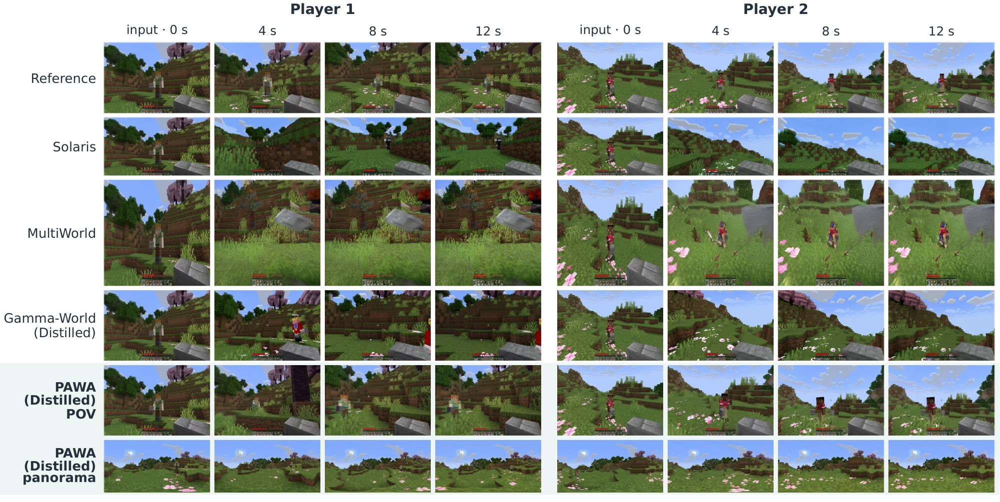
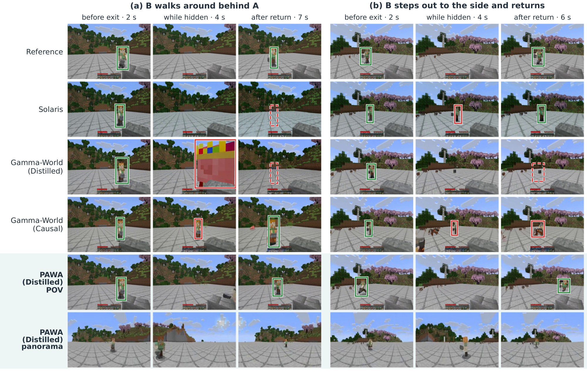
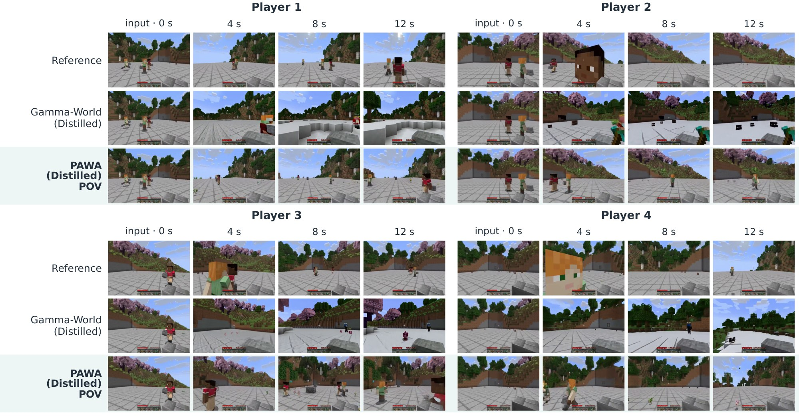

Twelve-second rollouts of Gamma-World (Distilled), which has no panoramic output, and PAWA (Distilled) with its panoramas below, both sampled with four steps. The episodes were selected by comparison with the reference for visible co-players and the absence of evident generation errors, and they are therefore curated rather than representative. Episode A is the episode of Figures 1 and 4 of the paper, Episode D is a development episode, and Episode E belongs to the low-motion tier.
Summary
- Dataset. Synchronized POV and world-stabilized panoramic videos with aligned actions of interacting Minecraft players, collected by a pipeline that decouples CPU gameplay capture from GPU rendering and scales beyond 64 simultaneous players.
- Model. POV and panorama towers coupled by ray-aligned cross-attention, with a quadratic-phase player encoding that provides m2 player codes instead of m+1 in m phase planes for odd prime m.
- Results. Higher POV prediction quality than Gamma-World, Solaris and MultiWorld with two players and than Gamma-World with four and eight players, together with high-fidelity panoramic predictions for 2 to 16 players.
Abstract
A multiplayer world model must predict how the independent actions of several players change a shared environment, including changes outside a player's current field of view. A point-of-view (POV) video captures such changes only after they enter its field of view, whereas panoramic video records the surroundings in every viewing direction and has served as an intermediate representation of the world state in recent world models. Learning this task therefore requires synchronized POV and panoramic videos of interacting players together with their actions, yet no existing dataset provides this combination in Minecraft, an established testbed in which players act independently in a shared, modifiable 3D world. We present PAWA, a dataset and framework for action-conditioned panoramic multiplayer world modeling. The dataset pairs each player's POV video with world-stabilized panoramic video and aligned actions. Its distributed pipeline decouples CPU gameplay capture from GPU rendering, scales beyond 64 simultaneous players, and re-renders each recorded session under new observation configurations without replaying the gameplay. On this dataset, we develop a dual-tower model that jointly predicts POV and panoramic video and couples the two streams through cross-attention that aligns tokens observing the same direction in a shared world frame. We further introduce a quadratic-phase player encoding that provides many more player codes than existing rotary codes at the same embedding dimension. Experiments show that PAWA outperforms state-of-the-art multiplayer world models in POV prediction quality while also producing high-fidelity panoramic predictions. We will release the dataset and collection pipeline to support further research on multiplayer world models.
Dataset

Model

Episode A under three PAWA configurations, namely the causal model sampled with four steps, PAWA (Causal) sampled with 35 steps and PAWA (Distilled) sampled with four steps, followed by the reference.
Experiments
Each of the first three blocks below begins with a figure from the paper, followed by the complete synchronized twelve-second videos from which it is drawn. The episode shown in the figure comes first, followed by further episodes, and the reference appears last in every video.
Two-player comparison

Videos
All models on the same episode in synchronized playback. Episode A is the episode of Figure 4, and Episodes B to E are further episodes selected for visible co-players and the absence of evident generation errors. Episode D is a development episode, and Episodes C and E belong to the low-motion tier. Every model keeps its native resolution and preprocessing, and the panorama tile shows PAWA above the reference.
Co-player re-entry

Videos
The complete rollouts of both examples in Figure 5, with the same models. The figure follows the left POV of each tile, which belongs to player A, and the co-player is player B.
Four to sixteen players

Videos
The POV and panoramic videos of every player. The four-player video is the episode of Figure 7. The eight- and sixteen-player episodes are those with the fewest visible generation errors among 12 episodes each, selected by visual comparison with the reference. Among the evaluated models, only PAWA supports sixteen players.
Removing the cross-attention
The paper disables all seven ray-aligned cross-attention sites of PAWA (Distilled) at inference with the same weights, noise and sampler (Table 9 of the paper, reproduced below). The videos show the resulting effect on the POV stream.
PAWA (Distilled) with and without its cross-attention sites, followed by the reference. The episode letters match the two-player comparison.
Quantitative results from the paper (Tables 1, 5–6 and 9)
| Model | Stream | FVD↓ | FID↓ | LPIPS↓ | PSNR↑ | SSIM↑ |
|---|---|---|---|---|---|---|
| Gamma-World (Bidirectional) | POV | 267.1 | 56.63 | 0.567 | 13.08 | 0.478 |
| Gamma-World (Causal) | POV | 306.7 | 52.00 | 0.606 | 12.46 | 0.451 |
| Gamma-World (Distilled) | POV | 279.7 | 58.36 | 0.584 | 11.83 | 0.431 |
| Solaris | POV | 614.9 | 77.31 | 0.634 | 10.42 | 0.447 |
| MultiWorld | POV | 771.2 | 186.06 | 0.667 | 11.76 | 0.395 |
| PAWA (Causal) | POV | 120.1 | 30.80 | 0.421 | 16.86 | 0.562 |
| PAWA (Distilled) | POV | 138.1 | 28.40 | 0.465 | 15.38 | 0.516 |
| PAWA (Causal) | Panorama | 88.0 | 26.53 | 0.223 | 20.41 | 0.643 |
| PAWA (Distilled) | Panorama | 98.1 | 28.26 | 0.243 | 19.77 | 0.617 |
| Players | Model | Stream | FVD↓ | FID↓ | LPIPS↓ | PSNR↑ | SSIM↑ |
|---|---|---|---|---|---|---|---|
| 4 | Gamma-World (Bidirectional) | POV | 752.3 | 142.95 | 0.633 | 13.34 | 0.487 |
| Gamma-World (Causal) | POV | 373.0 | 57.02 | 0.587 | 13.06 | 0.465 | |
| Gamma-World (Distilled) | POV | 323.6 | 56.65 | 0.577 | 12.39 | 0.440 | |
| PAWA (Causal) | POV | 138.0 | 33.49 | 0.427 | 16.41 | 0.550 | |
| PAWA (Distilled) | POV | 167.3 | 33.86 | 0.481 | 15.08 | 0.506 | |
| PAWA (Causal) | Panorama | 161.9 | 32.79 | 0.254 | 19.08 | 0.630 | |
| PAWA (Distilled) | Panorama | 194.1 | 32.94 | 0.264 | 18.67 | 0.619 | |
| 8 | Gamma-World (Bidirectional) | POV | 1707.7 | 213.93 | 0.681 | 12.83 | 0.497 |
| Gamma-World (Causal) | POV | 297.3 | 48.84 | 0.606 | 12.21 | 0.453 | |
| Gamma-World (Distilled) | POV | 267.1 | 48.27 | 0.586 | 11.56 | 0.432 | |
| PAWA (Causal) | POV | 111.5 | 32.32 | 0.458 | 15.06 | 0.536 | |
| PAWA (Distilled) | POV | 141.3 | 28.90 | 0.517 | 13.71 | 0.494 | |
| PAWA (Causal) | Panorama | 127.9 | 27.42 | 0.294 | 17.31 | 0.591 | |
| PAWA (Distilled) | Panorama | 135.6 | 29.52 | 0.301 | 16.72 | 0.577 | |
| 16 | PAWA (Causal) | POV | 92.2 | 28.39 | 0.467 | 15.50 | 0.554 |
| PAWA (Distilled) | POV | 116.7 | 23.96 | 0.520 | 14.15 | 0.511 | |
| PAWA (Causal) | Panorama | 93.6 | 23.65 | 0.333 | 16.87 | 0.570 | |
| PAWA (Distilled) | Panorama | 92.5 | 20.95 | 0.333 | 16.66 | 0.567 |
| Stream | Cross-attention sites | FVD↓ | FID↓ | LPIPS↓ | PSNR↑ | SSIM↑ |
|---|---|---|---|---|---|---|
| POV | Enabled | 138.1 | 28.40 | 0.4648 | 15.382 | 0.5157 |
| POV | Disabled | 179.0 | 37.71 | 0.5096 | 14.749 | 0.5094 |
| Panorama | Enabled | 98.1 | 28.26 | 0.2425 | 19.765 | 0.6172 |
| Panorama | Disabled | 104.0 | 28.42 | 0.2444 | 19.645 | 0.6142 |